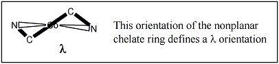

F. Metal Tris Chelates Containing Ligands that can have λ / δ Ligand Twists
2. The Λ-λλλ and Δ-δδδ Enantiomers of [Co(H2NCH2CH2NH2)3]3+
The Top Molecule is the Λ-λλλ -Isomer Potentially useful viewing commands:

Prove to yourself that the other two chelate rings have a λ configuration by moving the molecule with your mouse
If it helps:
Potentially useful viewing commands:

Prove to yourself that the other two chelate rings have a δ configuration by moving the molecule with your mouse
If it helps: